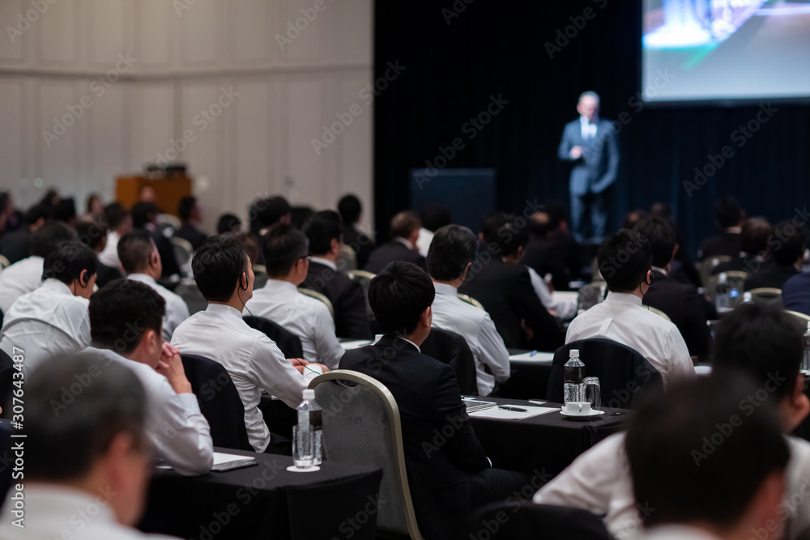

PTA主催 子どもたちを闇バイトから守る！
飛幡中学校
闇バイトの手口と、子どもたちを守るための関わり方について学びました。
ACTIVATION
単位PTA活性化事業として行われた、各校の取り組みをご紹介します。
※ 記事本文・写真は未支給のためダミーです（タイトル・実施校は実際のものです）。
全 5 件
飛幡中学校
闇バイトの手口と、子どもたちを守るための関わり方について学びました。

引野小・中学校
小学校と中学校のPTAが合同で、体験型のイベントを開催しました。

大谷小学校
地域と連携し、子どもたちが防災について学ぶ機会をつくりました。
大谷中学校
子どもたちが将来について考えるきっかけとなる講演会を開催しました。

ひびきの小学校
地域に伝わる孫次凧をつくり、親子で凧あげ大会を行いました。
条件に一致する記事はありませんでした。キーワードや絞り込みを変えてお試しください。